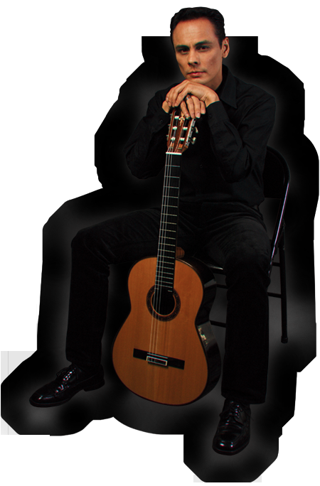
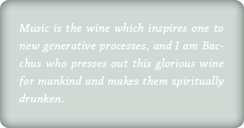

|
Xavier Chavarro began his musical training at the age of twelve. He first studied the classical guitar repertoire under the direction of world renowned Classical Guitar Masters Carlos Barbosa-Lima and Ruben Riera at the National Guitar Institute in New York City. After years of mastering an extensive classical repertoire, he embarked on a different musical journey. He crossover and continued his studies of harmony, arranging and improvisation with Jazz legends Reggie Workman, Barry Harris and Jon Herrington at The New School Jazz and Contemporary Music Program where he obtained his Bachelors of Fine Arts Degree. Finally, he attended The New England Conservatory of Music earning his Masters of Music Degree. Mr. Chavarro has since performed in prestigious music venues throughout Europe (Wigmore Hall) and United States (Weill Recital Hall, Carnegie Hall). Whether it be as a solo concertist or leading his trio, his unique voice can be identified in any of the diverse music styles that he performs, enjoys and is inspired by. He is equally at home performing Classical Guitar Repertories, Flamenco palos, or Jazz Standards. All of these genres with the unique artistry and a technical expertise that are compelling to critics and the general public. Today Mr. Chavarro is an active multi-dimensional performer and an accomplished educator. He is presently working on a new arranging project of Latin American Folklore.
“A refined, focused and inspiring guitarrist” – Anchorage Daily News
|